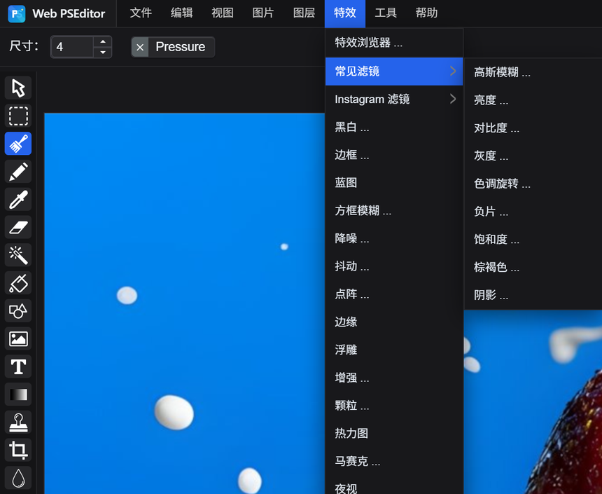

加一层柔和投影（以及为什么你的看不见）
投影是让抠图「落地」最便宜的办法，也是最多人加了却看不见的效果——因为阴影画在不透明像素的背后，而满幅照片根本没有「背后」这块地方。
所以动滑杆之前先记住一条硬前提：图层必须有透明边。产品抠图、logo、文字层、透明贴纸，这些都可以。铺满画布的照片，无论偏移拉多大都不会出现阴影。

对话框里到底改了什么
【特效】→【常见滤镜】→【阴影】 有四个控件：
| 控件 | 范围 / 默认 | 作用 |
|---|---|---|
| X 偏移 | −100 到 100，默认 10 | 水平位移。正数把阴影往右推。 |
| Y 偏移 | −100 到 100，默认 10 | 垂直位移。正数往下——光从上方来，这是常用方向。 |
| 半径 | 0 到 100，默认 5 | 柔化程度。0 是硬边复制，数值高空了会糊成一团雾。 |
| 颜色 | 默认 #000000 | 阴影颜色。不一定非黑，见下面关于颜色的说明。 |
数值单位是画布像素，同样一组数字，在 600 像素的贴纸和 3000 像素的产品图上完全是两回事。判断效果要在 100% 缩放下看，适应窗口里 20 像素的半径看着像没加。
能直接抄的参数
Y 偏移 10–16，X 偏移 0–4，半径 12–20，黑色。效果应该像物体底部的一层接触影。如果影往两侧散开，说明半径相对偏移太大了。
Y 偏移 3–6，半径 6–10。紧、轻；再大就变成 2005 年的网页按钮。
颜色不要用纯黑。暖色底上，纯黑阴影看起来像脏污。取一下背景色再加深——同一个色相的深色才像影子，不像污渍。
阴影不是把像素改死，它是挂在图层上的一条滤镜：图层面板里会多出「阴影」，点它能重新调参数，点 × 就删掉，原始像素一直在。【图层】→【复制】 后各挂一个，正好用来对比两档力度。
阴影看不见的四个原因
- 图层铺满了画布。 没有地方落影。先把主体抠出来。
- 加在背景图层上了。 阴影画在该层不透明像素的下面，而它处处都不透明，于是整片被盖住。
- 阴影被别的图层压住。 把带阴影的图层往上移，或把遮挡的图层往下移。
- 偏移小于半径。 偏移 2、半径 40，阴影会均匀地向四周发散，看起来是灰色光晕而不是影子。
怎么做得像真的
真实阴影不是均匀的：物体贴地处最深最实，离得越远越淡越散。一次滤镜做不到这两种，办法是同一图层复制两份、各做一遍：
复制图层（【图层】→【复制】），阴影设 Y 偏移 4、半径 6、黑色。这是物体和地面接触处那道紧而深的边。
再复制一份，阴影设 Y 偏移 20、半径 30，然后在图层面板把这层的不透明度降到 25%–35%。一紧一松、一深一淡两层叠起来，才像真的落在桌面上。
原始抠图放在这两层上面。三层结构——物体、接触影、环境影——以后想调力度随时能调，不用重抠。
该用与不该用
- 适合： 商品主图、演示文稿、作品集缩略图、界面效果图、主体需要从杂乱背景里跳出来的封面。
- 不适合： 印在白纸上的东西——阴影费墨，还像蹭脏了。老照片修复也别加，给扫描的人像添投影是编造，不是修复。
常见问题
加了阴影但完全没变化，为什么？
要么图层铺满了整张画布，没有透明区让阴影透出来，要么阴影加在了背景层上。先把主体抠出来，或把效果加在边缘透明的图层上，再确认上面没有别的图层压着。
半径和偏移取多少才像真的？
白底产品图：Y 偏移 10–16、X 偏移 0–4、半径 12–20、黑色。要更真实就分两遍：紧的接触影（偏移 4、半径 6）加一层松散的环境影（偏移 20、半径 30，图层不透明度 25%–35%）。数值单位是画布像素，图大要等比例放大。
加了阴影还能撤掉吗？
阴影是图层滤镜，图层面板里点「阴影」就能重调，点 × 删除；不做特效叠加时，一个图层挂一个阴影也就够了。
相关教程推荐
拿一张透明 PNG，复制两层，做一道紧接触影加一层松散环境影，再和只加一遍的效果对比。